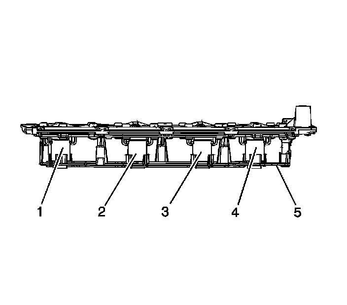
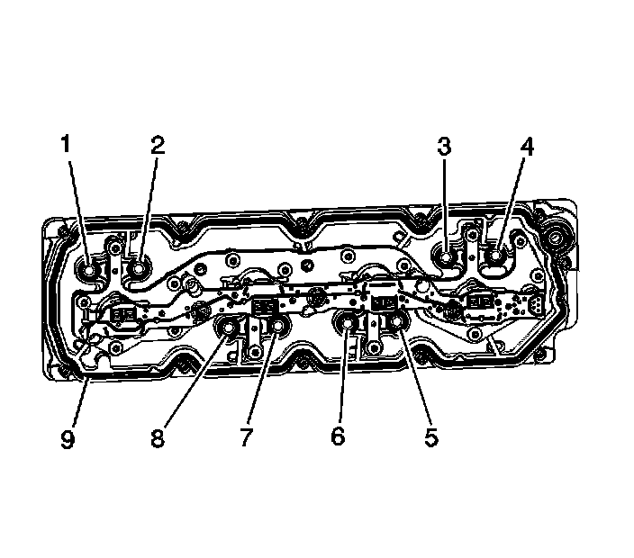

59. Valve Lifter Oil Manifold Cleaning and Inspection
Valve Lifter Oil Manifold Cleaning and Inspection

Important:
^ Do not allow dirt or debris to enter the oil passages of the manifold. Plug, as required.
^ Do not disassemble the electrical components from the manifold.
^ Do not submerge the electrical components in cleaning solvent.
^ Do not use the manifold exterior gasket again. Remove the exterior gasket and install a NEW service gasket during assembly.
Do not lift the manifold assembly by the electrical lead frame.

1. Remove the oil pressure sensor (706) and washer (707).
2. Remove the oil screen (452) with O-ring (454).
Caution: Refer to Safety Glasses and Compressed Air Caution.
3. Clean the manifold with compressed air.

4. Inspect for loose electrical solenoids (1-4) or loose or missing bolts.
5. Inspect for damage to the electrical lead frame (5).
6. Inspect for a damaged electrical connector, for bent or corroded pins.

7. Inspect for damaged interior sealing gaskets (1-8). If the interior sealing gaskets are damaged, the manifold must be replaced as an assembly.
8. Inspect for a damaged exterior sealing gasket (9) or scored gasket surfaces.
9. Inspect for debris or restrictions within the oil passages of the manifold. Refer to Cylinder Deactivation (Active Fuel Management) Valve Lifter Oil Manifold Diagnosis and Testing.